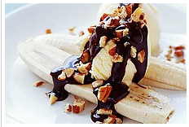
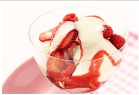
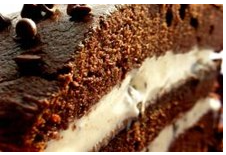
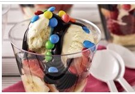
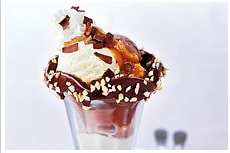
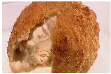

Bliss ice cream parlour is a locally owned business in Marshalltown.
Offering Johannesburg city well thought ice cream that will have you wanting more.
Banana Split

Ingredients (serves 1)
1 banana, peeled, cut lengthways
2 scoops Gatti Full Cream vanilla ice-cream
2 tablespoons chocolate sauce
3 pecans, chopped
Method
Drizzle with chocolate sauce.
Sprinkle with nuts. Serve.
Berry Sunday

Ingredients(serves 6)
2 cups Gatti full cream vanilla ice cream
1 cup full cream milk
1 teaspoon vanilla extract
Method
In a blender, combine ice cream, milk and
vanilla extract. Blend until smooth. Pour into
glasses and serve.
Ice cream cake

Ingredients(serves 8)
517 g chocolate cake mix
2L Gatti full cream carton ice cream, softened
Method
Prepare cake according to package directions;
bake in a 9x13 inch baking dish and cool completely.
Remove the carton and, using a piece of string or dental floss,
cut the ice cream in half lengthwise (long side to long side)
and place the two layers side by side on a piece of waxed paper.
Banana sundae

Ingredients (serves 4)
1/2 cup dark chocolate discs
2 tablespoons pure cream
2 bananas, peeled, sliced
12 strawberries, hulled, quartered
8 scoops Gatti full cream vanilla ice-cream
35g packet mini M&Ms
Method
Place chocolate and cream in a saucepan over low heat.
Cook, stirring, for 3 minutes or until melted and smooth.
Layer banana, strawberries and ice-cream in four glasses.
Drizzle with chocolate mixture.
Top with M&Ms. Serve.
Chocolate sundae

Ingredients (serves 1)
2 1/2 tbs (50ml) chocolate sauce, plus
extra to decorate the glass
chopped peanuts
2 small scoops chocolate ice-cream
2 small scoops vanilla ice-cream
2 1/2 tbs (50ml) peanut butter sauce
Whipped cream and chocolate flakes
Method
Dip the rim of the sundae glass in the chocolate sauce,
then dip in the chopped nuts. Place 1 scoop of each ice-cream
into the glass, then add 1 tablespoon each of chocolate sauce
and peanut butter sauce. Sprinkle over half the nuts, then repeat layers.
Drizzle with the remaining chocolate and peanut sauces,
top with whipped cream and decorate with chocolate flakes
Fried ice cream

Ingredients (serves 2)
120g maderia cake, crumbled
4 scoops Gatti full cream
ice cream (flavour of your choice)
Caramel topping, to serve
Method
Place the cake crumbs in a large non-stick frying pan over medium-high heat.
Cook, stirring occasionally, for 4-5 minutes or until golden brown and crisp.
Transfer to a plate and set aside for 5 minutes to cool.
Working with 1 scoop of ice-cream at a time, roll the ice-cream in the crumb mixture.
Place in serving bowls. Drizzle with caramel topping to serve.